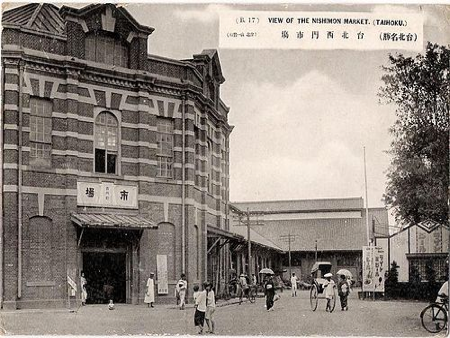

西門紅樓

25°02′31″N 121°30′25″E
臺北市萬華區成都路10號
建成年份：日本明治41年（1908年）
等級：直轄市定古蹟
西門紅樓位於臺灣台北市萬華區的成都路上，在臺灣日治時期俗稱八角堂，緊鄰西門町徒步區。
建築為兩層高的直轄市定古蹟紅磚洋樓，其外觀為每正立面8公尺，1908年所建。
今為臺北市著名的文創藝文場所、展演空間與同志酒吧聚集處。


新興文創中心
2007年11月，西門紅樓因臺北市政府文化局委由台北市文化基金會營運管理而再更名為「西門紅樓」，藉由舉辦文創性的活動內容重新塑造，包含了：
八角樓內的二樓劇場、中央展區、百寶格、西門紅樓茶坊、西門紅樓精品區
十字樓直段的16工房、文創孵夢基地
十字樓橫段的河岸留言西門紅樓展演館
北廣場的創意市集、月光電影院、南廣場的露天咖啡區等多元性區塊
成功的轉型成為台北市西區新生之文化創意產業發展中心， 於2008年榮獲第七屆“臺北市都市景觀大獎”歷史空間活化獎。2009年西門紅樓接手管理「臺北市電影主題公園」，並規畫「Urban Show Case都市藝術方塊」公共藝術裝置，此藝術裝置更於2010年獲得“都市彩妝之公共開放空間類”金獎，2010年西門紅樓於十字樓二樓的直段空間打造另一展售平台「文創孵夢基地」，邀請創意店家在此進駐。